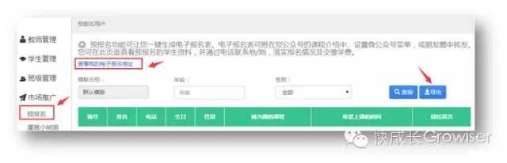
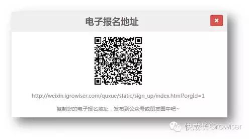
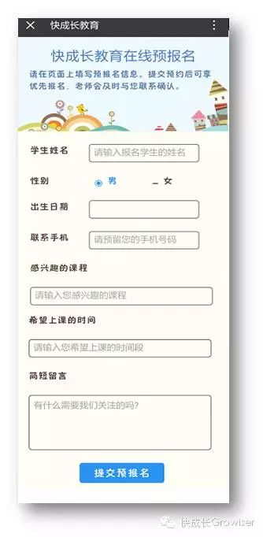
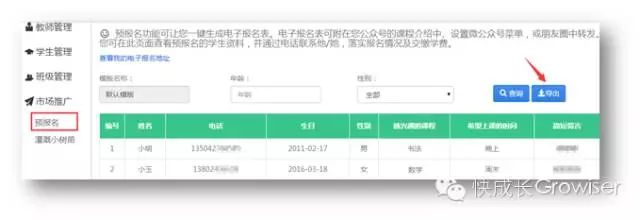

什么是“预报名”
很多时候招生之所以成为困扰机构的难题，往往并不是因为招生本身真的有那么难，而是因为信息不对称，资源得不到有效配置。
在学校苦于招生效果不佳的时候，其实很多学生、家长也在面临着选择困难症，不知道选择哪个机构报名好，甚至不知道自己想要学的课程在哪个机构可以报上名。
而快成长教育系统的“预报名”功能，正好可以解决这个尴尬的问题：将机构的招生需求与学生家长的报名意愿结合起来，做到信息有效对接，减少招生过程中的无用功。
机构老师可通过后台管理系统一键生成预报名电子表格，非常方便快捷。生成报名表后，可将表格附在您公众号的课程介绍或者机构微官网中，也可以设置微公众号菜单或朋友圈中转发，让更多人看得到。这比印传单上街派发更省钱省力，传播效果还更快更好哦！
学生、家长可以通过机构发布的电子报名表格对感兴趣的课程进行预报名，填写完相关信息并提交成功后，机构老师即可在后台查看到预报名的学生家长资料，并及时与对方联系。
机构老师与预报名的学生家长进行沟通，了解学生家长的报名需求，同时把机构的课程设置、师资情况等向学生家长进行详细介绍，进而落实报名和缴费。比起漫无目的地电话邀约（学生家长眼中的骚扰轰炸）是不是更精准、更高效了呢？
如何使用“预报名”
（1）机构老师登录后台管理系统，点击“市场推广→预报名”菜单，点击“查看我的电子报名地址”按钮，即出现电子报名地址。（点击图片可放大查看）
您可微信扫描或直接复制您的电子报名地址，发布到公众号或朋友圈，也可联系我们的技术人员将预报名表格附在您的微官网中。
（2） 生成的预报名表格如下图所示，点击右上角可将表格转发给朋友或分享到朋友圈中。 学生家长在这个页面填写预报名信息并提交成功后，机构老师即可在后台查看到预报名的学生家长资料，并及时与对方联系。
（3）机构老师进入后台的预报名用户界面，可查看全部已经预报名的学生信息。 点击“导出”按钮，可以将查询的结果导出到Excel文件，方便沟通管理。
